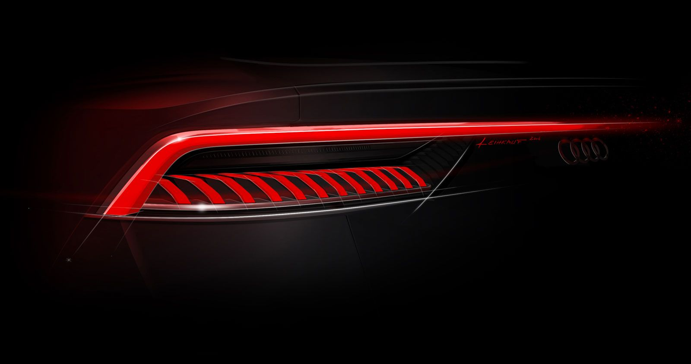
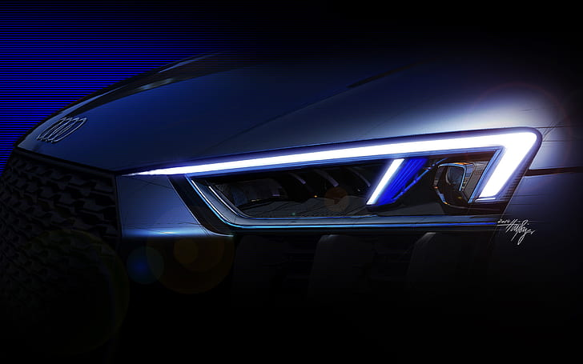
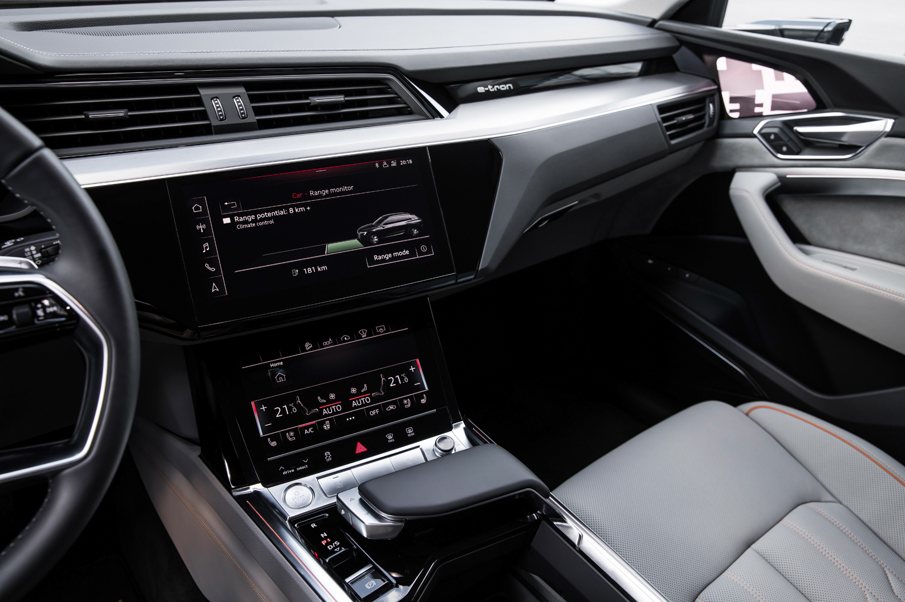

Innovation
Audi is one of the most loved car brand all around the world. Therefore there must be constant progress. The people who are involved in Audi are always trying to upgrade as much as possible so that every fad of the customers can be satisfied. That's why this brand will be on top in every rank.


Pioneer of light
Light provides so much more than mere illumination on an Audi: The headlights are a defining design feature and give expression to digital technology.
The digitalization of the lights will enable Audi to strengthen the interplay between technology and design – through light in motion, for example. The dynamic turn signal is not only attractive, but also an easily understandable form of information for all road users.
And since first impressions last – whether with people or cars – coming-home and leaving-home sequences add an emotional charge to the effect generated by the light. Locking and unlocking the vehicle triggers dynamic light shows in the headlights and taillights that reflect its distinctive character.
The visions of what a vehicle’s light may be capable of doing in the future go much further: Headlights could project symbols onto the road to warn other road users of dangers – such as an ice hazard. There are no limits to the ideas generated by the Audi light designers and engineers; for the time being, it is legal regulations that determine what is possible in this regard.
Illuminated cars of the future
Teodor Kyuchukov is the (almost literally) enlightened designer of the magnificent Audi A’KIMONO LS2.0 Concept. His idea is based on the “Automatic Lighting Sculpture,” an artificial lighting system used to make the exterior body surfaces visible in the dark.
Developed from the original A’kimono Concept, the third prize winner at the Desire Design Contest 2007 by Domus Academy & Stile Bertone, the design is overpowering. Mysterious and edgy, the car employs hidden lighting in order to make its muscular silhouette recognizable, even in the darkest of hours.
The concept was inspired by the traditional Japanese costume, the kimono, and brings to mind something out of sci-fi Japanese comic books. Still, its aggressive lines follow the latest philosophy of Audi loyally for its sportscar models.
MMI touch system
Touch System
Navigate, communicate and enjoy the latest infotainment from Audi. Take advantage of brilliant touch displays with haptic feedback, a smartphone like interface with simplified natural voice control and experience a new way to be one with your Audi.
Personal Route Assistant: When the feature is activated, it monitors the traffic situation for regular routes.
Online traffic information.
MMI touch for fast and intuitive operation, e.g. entering a destination by handwriting recognition, as well as free "movement" around the map and scaling it.
Comfort.
More comfortable than ever
Efficiety.
Navigation data for more easy trip
Stop Talking Like A Robot.
Speak your mind with natural voice

Function MMI Navigation and its privileges :
- Easy maintenance of the infotainment system via voice commands from the spoken language.
- Detailed information about the routes: map overview, choice of alternative routes, Point-of-Interests, lane recommendations, highway exits, detailed maps of intersections and much more.
- By setting speed and slope limits, you have more predictability while traveling.
- Country Information: Displays country-specific information.
- Advanced 3D models for selected cities.
- The best ideas are simple and familiar. Swipe, pinch, tap and write just like you would on your smartphone to interact with the infotainment and climate controls.
- Contains the entire Audi connect Navigation & Infotainment portfolio.
- Each Audi advanced key to your Audi, is a key to your personality. Restore over 400 vehicle settings in a matter of seconds, by using one of the seven key-linked driver profiles.
- Since we know one size does not fit all, MMI® touch response allows you to personalize controls, reconfigure icons and even create Audi advanced key-linked profiles, ensuring each time you get in your Audi, it is in fact, your Audi.
- Each Audi advanced key to your Audi, is a key to your personality. Restore over 400 vehicle settings in a matter of seconds, by using one of the seven key-linked driver profiles.